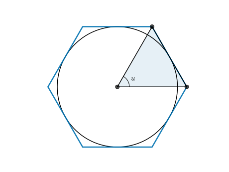
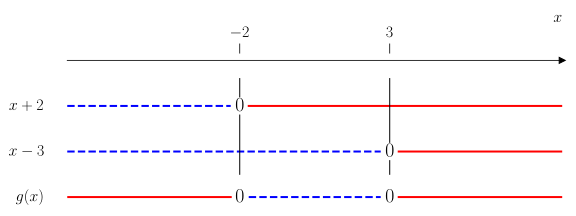
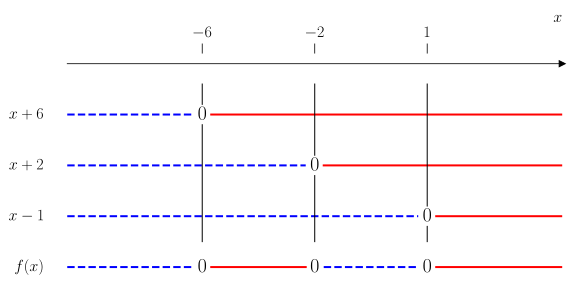
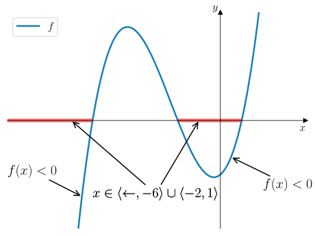
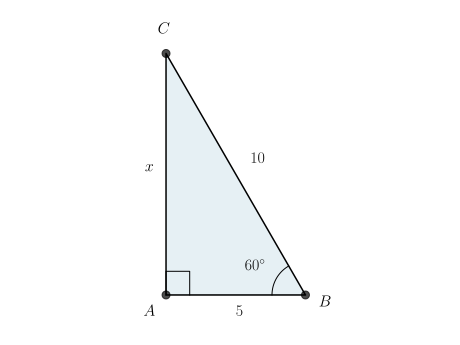

Funksjoner (Del 1)#
Oppgavene skal løses uten hjelpemidler.
Oppgave 1 (Vår 2023)
Funksjonen \(f\) er gitt ved
I hvilke punkter skjærer grafen til funksjonen \(x\)-aksen?
Fasit
Grafen til \(f\) skjærer gjennom \(x\)-aksen i \(x = -2\) og \(x = 4\).
Løsning
Vi bruker \(abc\)-formelen til å bestemme når \(f(x) = 0\):
som betyr at
Dermed skjærer grafen til \(f\) gjennom \(x\)-aksen i \(x = -2\) og \(x = 4\).
Oppgave 2 (Høst 2023)
Funksjonen \(f\) er gitt ved
I hvilke punkter skjærer grafen til funksjonen \(x\)-aksen?
Fasit
Grafen til \(f\) skjærer gjennom \(x\)-aksen i \(x = -1\), \(x = 2\) og \(x = -3\).
Løsning
Vi må bestemme hvilke \(x\) som medfører at \(f(x) = 0\). Først kan vi lete etter et heltallige nullpunkter \(x\) som deler konstantleddet i \(f(x)\). Kandidater for dette er
Vi tester ut verdiene systematisk til vi får \(f(x) = 0\):
dermed finner vi at \(f(-1) = 0\) som betyr at \((x + 1) | f(x)\), det vil si \((x + 1)\) er en faktor av \(f(x)\). Vi kan utføre polynomdivisjon for å faktorisere \(f(x)\):
{kind=link}
Så må vi finne røttene til \((x^2 + x - 6)\) som vi gjør med \(abc\)-formelen:
som gir
Dermed skjærer grafen til \(f\) gjennom \(x\)-aksen i \(x = -1\), \(x = 2\) og \(x = -3\).
Oppgave 3 (Høst 2023)
Funksjonen \(f\) er gitt ved
Bestem likningen for tangenten til grafen til \(f\) i punktet \((1, f(1))\).
Fasit
Løsning
Tangenten går gjennom punktet \((1, f(1))\) som har \(y\)-koordinat:
Videre er stigningstallet til tangenten \(a = f'(1)\) som vi finner ved å derivere \(f(x)\):
som gir
Ved ettpunktsformelen finner vi likningen til tangenten:
som er likningen for tangenten.
{kind=link}
Oppgave 4 (Høst 2023)
Funksjonen \(f\) og \(g\) er gitt ved
Nedenfor vises seks grafer.
Hvilke av grafene nedenfor er grafen til \(f\)?
Fasit
Graf C.
Løsning
Vi kan skrive om \(f(x)\) til
som betyr at \(f\) har
En horisontal asymptote \(y = 2\)
En vertikal asymptote \(x = -2\)
Et nullpunkt \(x = 4\)
Graf C er den eneste grafen som har en horisontal aysmptote \(y > 0\), en vertikal asymptote \(x < 0\) og et nullpunkt \(x > 0\). Dermed er graf C grafen til \(f\).
Hvilke av grafene nedenfor er grafen til \(g\)?
Fasit
Graf F.
Løsning
Vi kan bruke konjugatsetningen til å skrive om \(g(x)\) til
Vi kan merke oss at \(g(x)\) har ingen felles faktorer i teller og nevner som betyr at
som betyr at \(g\) har to nullpunkter \(x = -2\) og \(x = 2\).
Siden teller og nevnerpolynomet til \(g\) har samme grad, og ledende koeffisient for begge polynomer er \(1\), må den horisontale asymptoten til \(g\) være \(y = 1\).
Til slutt har nevnerpolynomet i \(g(x)\) nullpunktene \(x = \pm 3\) som blir \(g\) sine vertikale asymptoter.
Det er bare graf F som passer med egenskapene til \(g\) fordi
Avstanden fra \(y\)-aksen til hvert nullpunkt er like stor. Dette er ikke tilfelle i graf D (som ikke har nullpunkter).
Avstanden fra \(y\)-aksen til hver vertikal asymptote er like stor. Dette er ikke tilfelle i graf E der avstanden til den éne asymptoten er større enn avstanden til den andre (fra \(y\)-aksen).
Den horisontale asymptoten er en konstant linje \(y = k\) der \(k > 0\). Dette stemmer ikke for graf D.
Graf A, B og C har alle sammen bare én vertikal asymptote og er automatisk eliminert fra lista over kandidater.
Oppgave 5 (Vår 2023)
Gitt likningen
Bestem \(a\) og \(b\) slik at likningen blir en identitet.
Fasit
Løsning
Vi utfører polynomdivisjon for å få et andregradspolynom vi kan faktorisere:
{kind=link}
Altså kan vi faktorisere tredjegradspolynomet som
Vi må bestemme røttene til andregradspolynomet for å bestemme \(a\) og \(b\).
som gir
Dette betyr at
som betyr at likningen er en identitet hvis
Oppgave 6 (Vår 2023)
Nedenfor ser du grafen til en rasjonal funksjon \(f\).
Bestem \(f(x)\).
Husk å argumentere for at svaret ditt er riktig.
{kind=link}

Fasit
Løsning
Grafen til \(f\) passer med en rasjonal funksjon der teller- og nevnerpolynomet er lineære polynomer. Da kan vi skrive \(f(x)\) på formen
der
\(y = a\) er den horisontale asymptoten
\(x = b\) er nullpunktet til \(f\)
\(x = c\) er den vertikale asymptoten til \(f\)
Fra grafen til \(f\) kan vi lese av at
den horisontale asymptoten er \(y = 3\).
nullpunktet er \(x = 2\).
den vertikale asymptoten er \(x = 1\).
Dermed er
Oppgave 7 (Vår 2024)
I figuren nedenfor vises grafen til en funksjon \(f\).

Bestem \(f(x)\).
Fasit
Løsning
Vi skriver \(f(x)\) på nullpunktsform siden vi kan lese av begge nullpunktene til \(f\) som gir:
Siden grafen til \(f\) går gjennom \((0, 24)\), betyr det at
Dermed er \(f(x)\) gitt ved
Løs ulikheten \(f(x) > 12\).
Fasit
Løsning
Ulikheten \(f(x) > 12\) er gitt ved
For å løse ulikheten, ganger vi ut venstresiden og samler alle ledd på én side så vi får
der vi har brukt at \((x - 3)(x + 2) = x^2 - x - 6\). Vi tegner et fortegnsskjema for \(g(x) = (x - 3)(x + 2)\) og leser av når \(g(x) < 0\). Løsningen vil være ekvivalent med løsningen av \(f(x) > 12\).
{kind=link}

Fra fortegnslinja til \(g(x)\) har vi at
Oppgave 8 (Vår 2024)
Sett opp en matematisk identitet med utgangspunkt i arealet av det grønne fargelagte området.

Fasit
Løsning
Vi kan skrive arealet av det grønne fargelagte området som
ved å ta arealet av det store kvadratet med sidelenger \(a\) og trekke fra det lille hvite kvadratet med sidelengde \(b\).
Men vi kan også skrive arealet av det grønne fargelagte området direkte:
Dermed er
Oppgave 9 (Vår 2024)
Guri har utført to ulike polynomdivisjoner og påstår begge divisjonene viser at faktoriseringen nedenfor er riktig.
Hvilke to polynomdivisjoner kan hun ha utført?
Utfør de to polynomdivisjonene, og forklar at hver av dem viser at faktoriseringen er riktig.
{kind=link}
{kind=link}
Oppgave 10 (Høst 2024)
Funksjonen \(f\) er gitt ved
Bestem koordinatene til bunnpunktet på grafen til \(f\).
Fasit
Bunnpunktet er \((-1, -4)\).
Løsning
Symmetrilinja til \(f\) kan vi bestemme ved gjennomsnittet av nullpunktene som gir
\(y\)-koordinaten til punktet finner vi derfor med \(f(-1)\) som gir
Altså er bunnpunktet \((-1, -4)\).
Oppgave 11 (Høst 2024)
Funksjonen \(f\) er gitt ved
Løs ulikheten \(f(x) < 0\) og illustrer løsningen grafisk ved å lage en skisse.
Fasit
Løsning
Vi må nullpunktsfaktorisere \(f(x)\) for å løse ulikheten. Først leter vi etter et heltallig nullpunkt ved å prøve ut verdier av \(x\) som deler konstantleddet i \(f(x)\). Kandidatene for dette er
Vi prøver oss fram systematisk frem til vi får \(f(x) = 0\):
Altså er \(x = 1\) et nullpunkt til \(f\) som betyr at \((x - 1) | f(x)\). Vi utfører polynomdivisjonen \(f(x) : (x - 1)\) for å faktorisere \(f(x)\) fullstendig:
{kind=link}
Vi anvender \(abc\)-formelen på \(x^2 + 8x + 12\) for å finne de andre nullpunktene:
som gir
Altså kan vi skrive \(f(x)\) som
For å løse en ulikheten \(f(x) < 0\) tegner vi et fortegnsskjema for \(f(x)\):
{kind=link}

Vi kan lese av fra fortegnsslinja til \(f(x)\) at
Vi kan illustrere løsningen grafisk ved å lage en skisse av grafen til \(f\) og markere områdene der \(f(x) < 0\) med rødt.
{kind=link}

Oppgave 12 (Høst 2022)
Grafen til en andregradsfunksjon \(f\) er vist nedenfor.

Om andregradsfunksjonen \(f\) får du vite at
Tangenten i punktet \((-2, 0)\) har likningen \(y = 9x + 18\)
Tangenten i punktet \((8, -10)\) har likningen \(y = -11x + 78\)
Bestem \(f'(x)\).
Fasit
Løsning
Siden \(f\) er en andregradsfunksjon, betyr det at \(f'\) er en lineær funksjon
Vi vet også at stigningstallet til tangenter til grafen til \(f\) i \((x, f(x))\), har samme verdi som den momentane vekstfarten \(f'(x)\) i punktet. Likningen til tangenten i punktet \((-2, 0)\) er gitt ved \(y = 9x + 18\) som betyr at stigningstallet til tangenten er \(9\).
Likningen til tangenten i punktet \((8, -10)\) er gitt ved \(y = -11x + 78\) som betyr at stigningstallet til tangenten er \(-11\). Da følger det at
Siden den deriverte er en lineær funksjon, kan vi bestemme stigningstallet til \(f'(x)\) ved å bruke topunktsformelen fremfor å gå løs på likningssystemet. Da får vi:
Så setter vi inn verdien for \(a\) i én av likningene vi har funnet:
Dermed er
Oppgave 13 (Høst 2022)
Funksjonen \(f\) er gitt ved
Hvilken av grafene nedenfor kan være grafen til \(f\)?
Husk å argumentere for svaret ditt.
Fasit
Graf A
Løsning
Vi kan sjekke skjæringen med \(y\)-aksen for å se om vi kan eliminere graf \(C\):
Graf C skjærer \(y\)-aksen når \(y < 0\) som betyr at det ikke kan være grafen til \(f\).
Fra \(f(x)\) kan vi hente ut at
Det betyr at to av nullpunktene er symmetrisk fordelt om \(y\)-aksen, og at ett nullpunkt må ligge mellom to de som er symmetrisk fordelt. Vi kan se at graf B ikke oppfyller kravet siden det er et nullpunkt som ligger på oversiden av de to som ligger symmetrisk fordelt om \(y\)-aksen. Graf A derimot oppfyller kravet og er derfor grafen til \(f\).
Løs
Fasit
Løsning
Løsningen av ulikheten
Dermed kan vi lese av fra graf A hvor \(f(x) > 0\). Dette kan vi observere er når
Oppgave 14 (Vår 2022)
Bestem \(r\) og \(s\) slik at sammenhengen nedenfor blir en identitet
Fasit
Løsning
Vi ganger ut høyresiden:
Så setter vi de lik hverandre som gir:
Sammenligner vi koeffisientene til \(x\) og konstantleddene, får vi to likninger som må være oppfylt uavhengig av verdien til \(x\):
Fra den første likningen får vi at \(s = 5\). Setter vi inn verdien til \(s\) i den andre likningen, får vi at
Dermed er sammenhengen en identitet hvis
Oppgave 15 (Vår 2022)
Løs likningen
Fasit
Løsning
Vi bruker produktregelen som gir oss at
som betyr at
Sett opp en ulikhet som har løsning \(x \in \langle \gets, -1 \rangle \cup \langle 2, \to \rangle\).
Husk å begrunne svaret.
Fasit
Løsning
Vi kan tegne et fortegnsskjema for \(f(x) = (x - 2)(x + 1)\). Da får vi:
{kind=link}

Fra fortegnslinja, kan vi lese av at vi kan få løsningen \(x \in \langle \gets, -1 \rangle \cup \langle 2, \to \rangle\) med ulikheten \(f(x) > 0\). Dermed vil en ulikhet som har den oppgitt løsningen være
Oppgave 16
En fjerdegradsfunksjon \(f\) er gitt ved
Bestem \(a\) og \(b\) slik at likningen nedenfor blir en identitet
Fasit
Løsning
Vi kan starte med å observere at hvis vi setter \(u = x^2\) så kan høyresiden skrives om til et andregradspolynom:
Dette polynomet kan vi bruke \(abc\)-formelen på for å finne røttene \(u\) til polynomet:
som gir
Dermed kan vi skrive om polynomet til
Altså er
som betyr at likningen er en identitet hvis
Bestem i hvilke punkter grafen til \(f\) skjærer \(x\)-aksen.
Fasit
Løs ulikheten \(f(x) > 0\).
Fasit